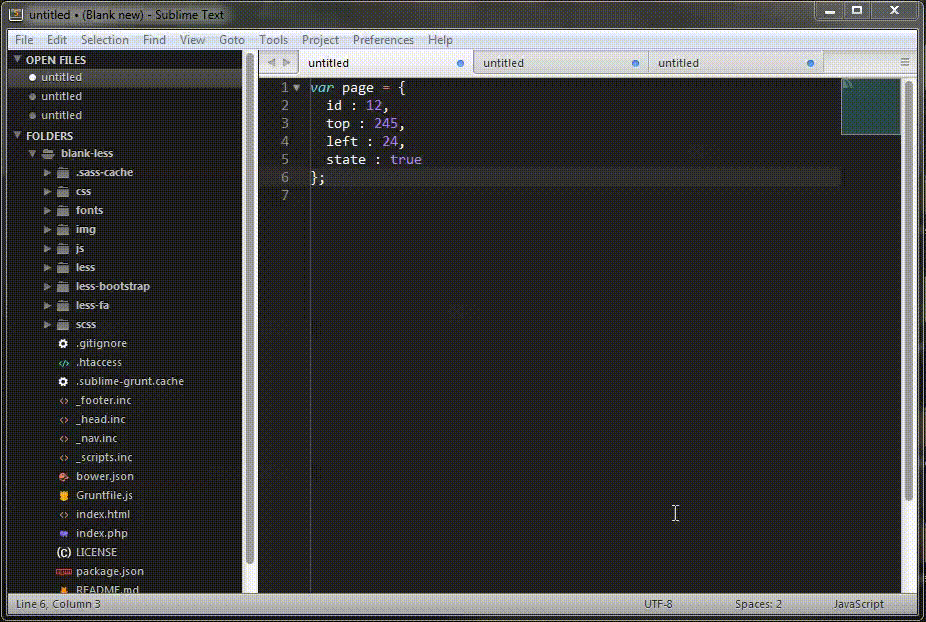
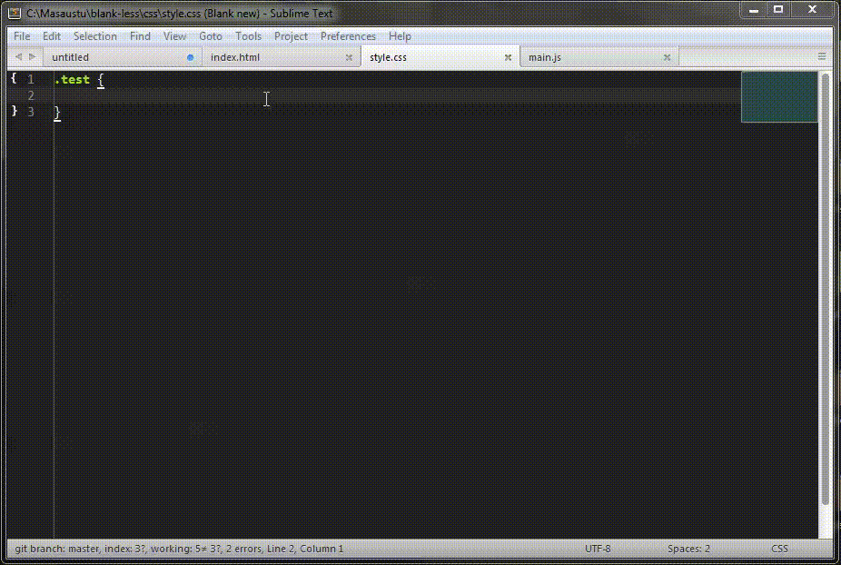
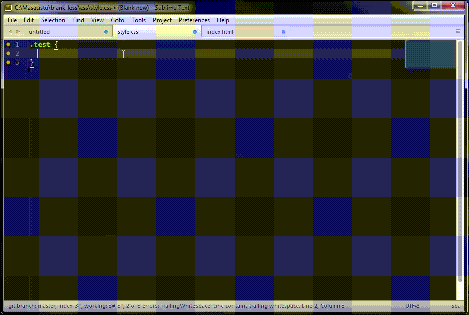
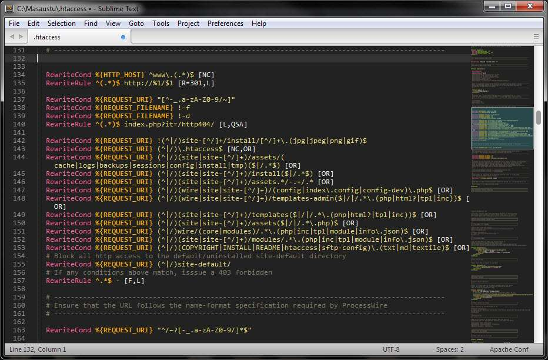
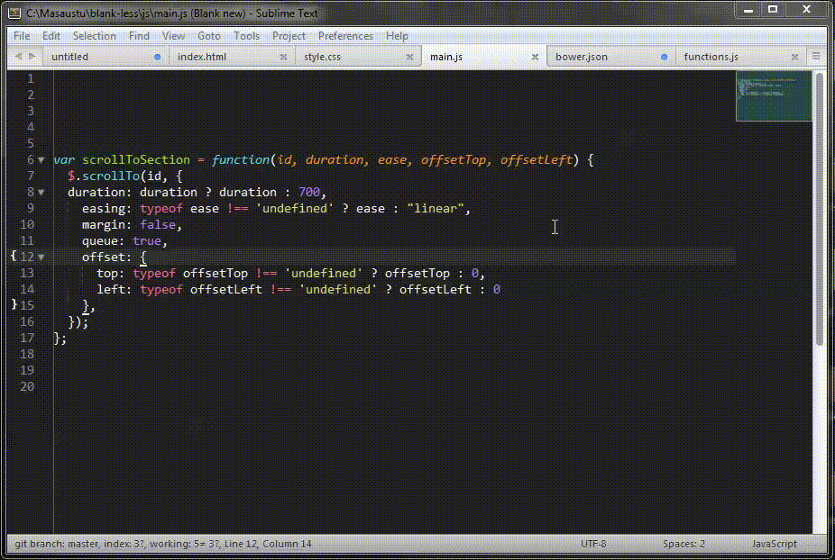

Наддака Артём 121-МКо
| Название | Вид | Функционал |
|---|---|---|
| 1. Alignment |  | Помогает выравнивать фрагменты кода. |
| 2. AngularJS | --- | Если вы используете Angular для своих проектов, этот пакет сильно упростит вам жизнь в паре с плагином SublimeCodeIntel, так как SublimeCodeIntel не может автоматически заполнять имена модулей и контроллеров Angular с атрибутами ng-***.
С помощью этого пакета можно автоматически заполнять переменные модулей, контроллеров, фабрик и сервисов командой Rebuilt Search Index. Плагин также позволяет заполнять все атрибуты Angular, которые начинаются с ng-*** и фрагментов встроенных функций Angular JS, таких как $http и $filter. |
| 3. Auto Semi-Colon |  | AutoSemiColon автоматически завершает строки в CSS и JavaScript файлах точкой с запятой ( ; ). Если вы не хотите получать ошибку при компиляции и сжатии js-файлов и, что более важно, писать чистый код, стоит воспользоваться этим пакетом. |
| 4. AutoFileName |  | AutoFileName помогает быстрее писать имена переменных и функций, подсказывая названия во всплывающем окне и автоматически заполняя названия. |
| 5. ApacheConf.tmLanguage |  | Выделяет синтаксис для файлов конфигурации Apache (.htaccess). |
| 6. BracketHighlighter |  | Этот плагин просто подчеркивает скобки. Когда курсор находится между кавычками, фигурными скобками, круглыми скобками, плагин отмечает начало и конец этой части. При написании вложенных функций этот пакет поможет вам увидеть, в каком блоке вы находитесь сейчас./td> |
| 7. Case Conversion | ||
| 8. Color Highlighter | ||
| 9. Console Wrap for JS | ||
| 10. CSS Extended Completions | ||
Редакторы с подсветкой кода. Плагины для Web-разработки.